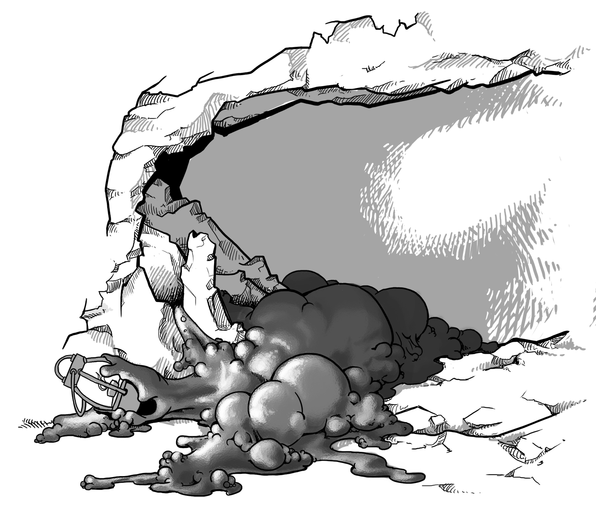

Complete Monster
by
Radaghast Kary
← Black Orc
↑Index↑
Black Slaad →

Illustration by Mariana Ruiz Villarreal,
Public Domain
Black Pudding
is an
Ooze
5e
Unaligned
D&D 5 facts
Size: Large
Type:
Ooze
CR: 4
D&D 5 sources
Monster Manual
, p 241
D&D 5 links
Black Pudding in 5e d20 SRD
Black Pudding on AideD&D
3e
TN
D&D 3.0 facts
Abilities: Str 17, Dex 1, Con 19, Int -, Wis 1, Cha 1
AC: 3 (-2 size, -5 Dex)
Advancement: 11-15 HD (Huge); 16-30 HD (Gargantuan)
Attacks: Slam +8 melee
CR: 7
Damage: Slam 2d6+4 and 2d6 acid
HD: 10d10+60 (115)
Initiative: -5 (Dex)
Organization: Solitary
Qualities: Blindsight, split, ooze
Reach: 5 ft. by 20 ft./10 ft.
Saves: Fort +7, Ref -2, Will -2
Size: Huge
Speed: 20 ft., climb 20 ft.
Terrain: Any marsh and underground
Treasure: None
Type:
Ooze
D&D 3.0 links
Black Pudding in 3.0 d20 SRD
D&D 3.5 links
Black Pudding in 3.5e d20 SRD
Pathfinder 2 facts
Family:
Ooze
Level: 7
Pathfinder 2 sources
Bestiary
Pathfinder 2 links
Black Pudding Monster in Pathfinder 2 SRD
1e
First BD&D
sources
Basic Set (Holmes)
, p 23
BLUEHOLME sources
BLUEHOLME Journeymanne Rules
BLUEHOLME links
Black Pudding Dreamscape Design
0e
OD&D facts
Number Appearing: 1
AC: 6
Move: 6
HD: 10
Chance in Lair: Nil
Treasure: Nil
OD&D sources
Monsters & Treasure
, p 4
N
S&W
facts
AC: [13]
Attacks: strike (3d8)
HD: 10
HDE: : 11
Move: 2 THE BLUE BOOK OF DANGERS & DWEOMERS
Special: Acidic
XP: 1700
S&W
sources
The Blue Book of Dangers and Dweomers
, p 80
{kind=link}